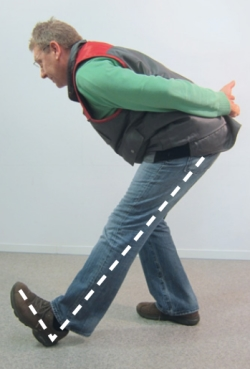

Dehnung der rückseitigen Beinmuskulatur
Ausgangsposition:
in Schrittstellung stehend:
- beide Fußspitzen nach vorne ausgerichtet
- beide Hände hinter dem Rücken verschränken
Ausführung:
- hinteres Bein beugen
- Gewicht auf dieses Bein verlagern
- vorderes Bein strecken und Fußspitze hoch- bzw. anziehen
- Oberkörper bzw. Rücken gerade nach vorne bringen
- Kopfhaltung in Linie mit Rücken
- Dehnung halten → 10 – 20 Sek.
- Seitenwechsel
Anmerkung:
falls Dehnreiz nicht ausreicht
→ hinteres Bein tiefer beugen

Wiederholung: 2 bis 3 x je Seite